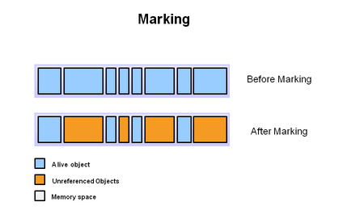

1. JVM的内存布局
JVM即Java Virtual Machine（Java虚拟机）。
JVM中将内存分为若干部分：
- 堆（Heap）
- 方法区（Method Area）
- 栈（Stack）
- Java虚拟机栈（JVM Stack）
- 本地方法栈（Native Method Stack）
- 程序计数器（Program Counter Register）

1.1 堆（Heap）
Java堆是被所有线程共享的一块内存区域。
Java堆主要就用来存放数组和类的对象实例，几乎所有对象实例都存放在Java堆，一般情况下，Java堆是JVM内存管理中最大的一块，同时Java堆也是GC（Garbage Collection，垃圾回收）机制执行的主要区域。
Java堆分为年轻代和老年代，而年轻代又被分为三块内存区域：Eden空间、From Survivor空间、To Survivor空间。
堆内存空间不足时抛出outOfMemoryError。
1.2 方法区（Method Area）
方法区也是被所有线程共享的一块内存区域。
方法区主要用来存储被虚拟机加载的类的类信息（类名、修饰符等）、字符串和常量、静态变量、编译后的代码等。运行时常量池是方法区的重要部分，class文件中的常量池在类被加载后就被放入方法区的运行时常量池。
方法区也会执行GC，但很少。
方法区内存空间不足时抛出outOfMemoryError。
1.3 Java虚拟机栈（JVM Stack）
Java虚拟机栈是线程私有的，它的生命周期与线程相同。
Java虚拟机描述的是Java方法执行的内存模型：每个方法执行时都会同时创建一个栈帧（Stack Frame）用于存储局部变量表（包括基本数据类型和对象引用）、操作数栈、动态链接、方法出口等信息。一个方法从被调用到被执行完成，对应着一个栈帧在Java虚拟机栈中从入栈到出栈的过程。
如果线程请求的栈深度大于虚拟机所允许的深度时，抛出StackOverflowError；当Java虚拟机栈无法申请到足够内存时，抛出OutOfMemoryError。
1.4 本地方法栈（Native Method Stack）
本地方法栈是线程私有的，它的生命周期与线程相同。
功能与Java虚拟机栈相同，但本地方法栈为native方法服务。
如果线程请求的栈深度大于虚拟机所允许的深度时，抛出StackOverflowError；当Java虚拟机栈无法申请到足够内存时，抛出OutOfMemoryError。
1.5 程序计数器（Program Counter Register）
程序计数器是线程私有的。
程序计数器只占内存的一小块部分。作用是JVM在解释字节码（.class）文件时，作为当前线程正在执行的字节码的行号指示器。每个线程都有一个程序计数器，线程之间的程序计数器相互独立互不干扰。
程序计数器时内存区域是Java虚拟机规范中唯一没有规定OutOfMemoryError的内存区域。
2. GC（Garbage Collection，垃圾回收）
随着程序执行，内存中对象实例等占据的内存越来越多，如果不及时回收，程序运行效率就会降低。
在JVM内存布局中， Java虚拟机栈、本地方法栈、程序计数器不需要GC，因为他们生命周期和线程同步，线程销毁，他们占用的内存自动释放；堆、方法区需要GC，主要回收那些没有被引用的对象实例。
2.1 判断Java对象是否存活的算法
判断Java对象是否存活的算法：
- 引用计数器算法
- 根搜索算法
2.1.1 引用计数器算法
给每个对象实例设置一个计数器，当这个对象被引用，计数器 + 1，当这个对象失去引用时，计数器 - 1，当一段时间内这个计数器都为0，则认为这个对象不存活，应当被垃圾回收了。
但是JDK1.1以后，就不采用这种算法了，而是采用根搜索算法。
2.1.2 根搜索算法
有一系列的GC Root的根节点，从这些根节点开始往下搜索，搜索通过的路径成为引用链（Reference Chain），当一个对象没有被GCRoot的引用链连接的时候，说明这个对象不可存活，应当被垃圾回收。
可作为GC Root的对象包括：
- 方法区中常量引用的对象。
- 方法区中静态属性引用的对象。
- Java虚拟机栈中引用的对象。
- 本地方法栈中引用的对象。
2.2 垃圾回收算法
垃圾回收算法主要有：
- 复制算法
- 标记-清除算法
- 标记-压缩算法
2.2.1 复制算法
将一块内存空间按1：1比例分为两部分内存1和内存2，只使用内存1，当内存1用满后，将内存1中存活的对象复制到内存2，清空内存1。同理，当内存2用满后，同上操作。
这个算法效率高，不会产生内存碎片，但是会浪费一半内存空间。
ps：堆的年轻代采用的是改进的复制算法，因为年轻代的大多数对象存活时间很短，所以不按1：1的比例分配内存空间，而是将年轻代分为一块较大的Eden空间和两块较小的Survivor空间，比例为8：1：1，每次使用Eden空间和其中一块Survivor空间，当垃圾回收时，将Eden空间和这块Survivor空间中还存活的对象复制到另一块空的Survivor空间，然后将Eden空间和这块Survivor空间清空。
改进后的算法只浪费10%的年轻代内存空间，大大节省了内存空间。
2.2.2 标记-清除算法
将所有需要垃圾回收的对象进行标记，标记结束后对被标记的对象进行垃圾回收。
这个算法效率低，会造成大量的内存碎片。

2.2.3 标记-压缩算法
将所有需要垃圾回收的对象进行标记，标记结束后对被标记的对象进行垃圾回收，然后把存活的对象向左端内存空间移动。
这个算法和标记-清除算法类似，但多了一个压缩步骤，解决内存碎片的问题。
2.2.4 分代收集算法
JVM中，堆的年轻代、老年代和方法区根据各自的特点分别采用了不同的算法。
2.3 垃圾回收器
- Serial：单线程的垃圾回收器，垃圾回收时要停止其他所有线程。
- Serial Old：Serial用于老年代的版本。
- ParNew：Serial的多线程版本。
- Parallel Scavenge：用于年轻代的垃圾回收器，基于复制算法，多线程。
- Parallel Old：Parallel Scavenge用于老年代的版本。
- CMS（Concurrent Mark Sweep）：最大可能解决Serial GC停顿的问题，用于老年代，基于标记-清除算法。
- G1：可同时用于年轻代和老年代，基于标记-压缩算法。
以上内容可能会有疏漏与错误，随着我以后的学习会持续更新改正。